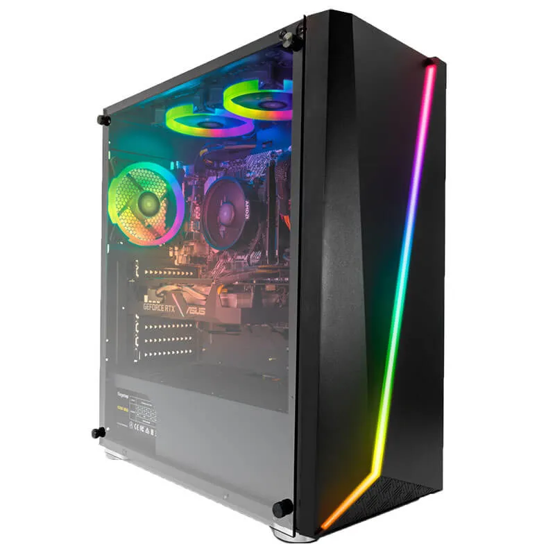
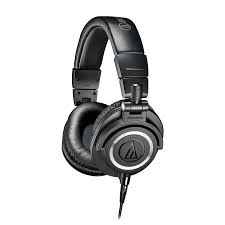
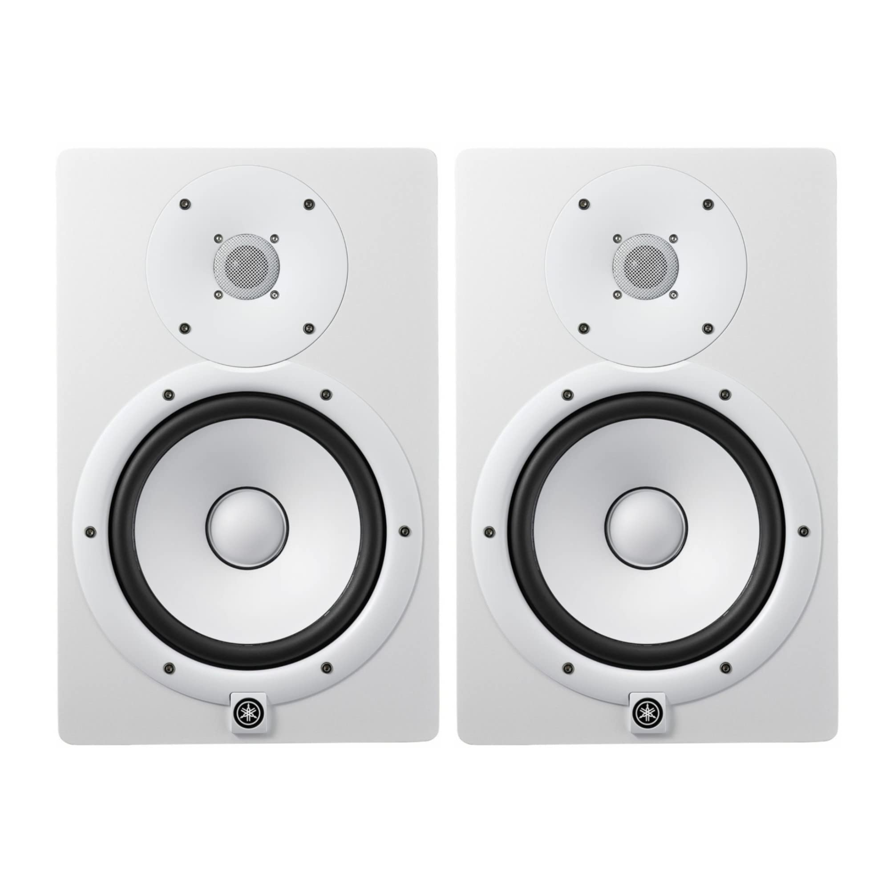
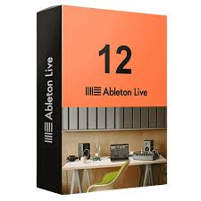
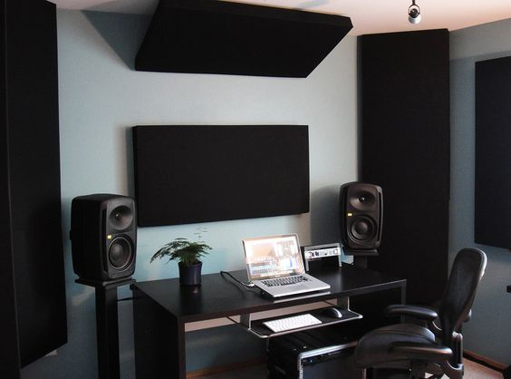
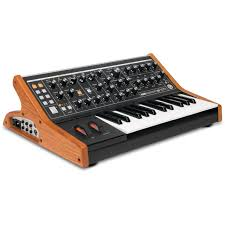
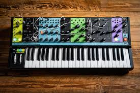
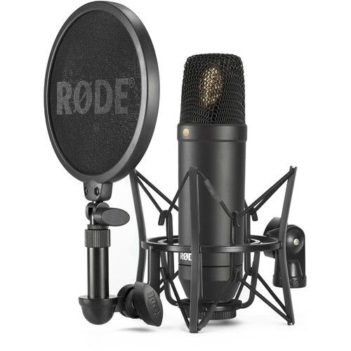
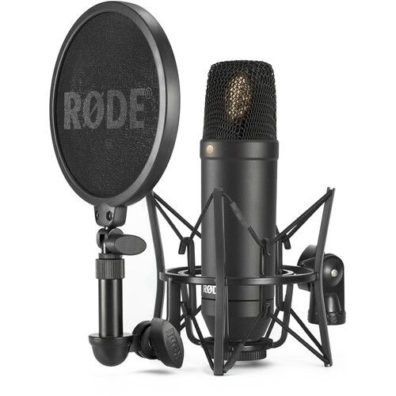

Lo primero que necesitaras para armar tu propio Home Studio es:
el equipo para producir musica, acondicionar el cuarto, entre otras cosas...
Labtop o PC
Es tu estudio virtual: La computadora actúa como un estudio de grabación digital, donde puedes grabar, editar, mezclar y masterizar tus canciones utilizando software especializado.
Es tu lienzo creativo: La computadora te brinda un espacio flexible y potente para experimentar con sonidos, componer melodías y crear arreglos musicales.
Audifonos o Monitores
Para crear música de calidad, necesitas escucharla con precisión. Los audífonos y monitores te permiten aislar el sonido y escuchar cada detalle de tu producción.
 DAW o Progama para producir musica
Un "DAW" (Digital Audio Workstation) es como un estudio de grabación virtual en tu computadora. Te permite grabar instrumentos, voces, y sonidos, editarlos, mezclarlos y aplicar efectos especiales.

Acondicionar el cuarto acusticamente
Obtener un sonido de alta calidad: Al tratar las superficies y controlar la reverberación, lograrás un sonido más claro y preciso, sin ecos ni distorsiones.

Sintetizadores fisicos(opcional)
La decisión de usar un sintetizador físico depende más de preferencias personales y flujo de trabajo que de una necesidad absoluta. Algunos productores prefieren la experiencia táctil y el sonido analógico de los sintetizadores físicos, pero esto no es esencial para crear música de alta calidad.
 Instrumentos y microfono
Los instrumentos musicales y los micrófonos: son las herramientas que captan y transforman las vibraciones sonoras en señales eléctricas que las computadoras pueden entender y manipular. Sin ellos, no podrías grabar tus ideas musicales ni darles vida en una grabación.
 
